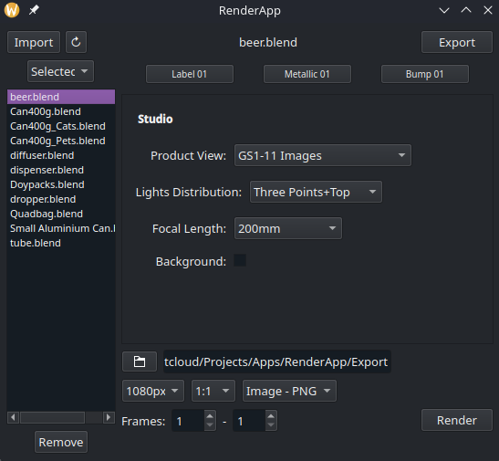

Alvaro Pérez
"Especialista en modelado 3D con amplia experiencia en la industria del packaging. Destaco en el modelado Hard Surface y en el desarrollo de métodos y herramientas para optimizar la producción. Apasionado por explorar nuevas oportunidades y tecnologías, en constante aprendizaje y comprometido con los proyectos en los que me me involucro."
En resumen
Para ahorrarte tiempo de lectura y comprobar de un vistazo si mi perfil encaja con lo que buscas, te resumo mis habilidades clave:
Modelado Hard Surface: Más de 7 años de experiencia profesional (y más de 15 desde que empecé en el 3D) creando todo tipo de modelos con precisión milimétrica, mallas optimizadas a partir de planos, imágenes o retopología de archivos CAD. Aunque he centrado gran parte de mi trayectoria en la industria del packaging, domino el modelado Hard Surface en su totalidad para cualquier tipo de producto o entorno.
Automatización y herramientas a medida: Desarrollo generadores paramétricos con Geometry Nodes, scripts y addons (tanto en Blender como en aplicaciones externas) para eliminar tareas repetitivas, recortar tiempos de entrega y agilizar la producción.
Renders fotorrealistas e iluminación: Por mi trayectoria en el sector audiovisual y fotográfico, creo estudios de iluminación y materiales para producir renders estáticos, animaciones e imágenes de producto.
Gestión técnica y biblioteca propia: Experiencia coordinando producción 3D, estimando tiempos, calculando la complejidad de los proyectos y aplicando control de calidad. Además, cuento con una biblioteca propia de más de 1.500 modelos de packaging creados por mí, organizada y lista para reutilizar y acortar tiempos.


Sobre mí
Mi relación con el mundo audiovisual empezó cuando tenía 14 años, al llegar la primera cámara a mi casa. Empecé a grabar vídeos personales, cada viaje, luego a grabar a patinadores para sus profiles en colaboración con marcas y más adelante a grabar y editar videoclips, festivales y tours.
Conseguí entrar en una revista militar donde estuve 5 años como fotógrafo, camarógrafo y editor de vídeos. Fue allí donde hice mi primera animación 3D en Autodesk 3ds Max en 2009 para la introducción de los DVDs de la revista. Esa animación me llevó a dejar la revista e irme a Barcelona a estudiar el Grado en Comunicación Audiovisual en la Universitat Pompeu Fabra. Escogí la especialidad de Interactivos y realicé un corto de animación y la Demo completa de un videojuego 3D como Trabajo de Fin de Grado, utilizando Maya y Unity.
Tras finalizar mis estudios solo quería hacer prácticas en 3D, dejando atrás mis años como camarógrafo y editor para centrarme en lo que más me gustaba. Hice las prácticas en la empresa barcelonesa 3D Click, donde me contrataron y trabajé durante 5 años. Allí me profesionalicé como Modelador 3D y responsable de producción, especializándome en el modelado Hard Surface del packaging. Aprendí a modelar con medidas exactas, hacer retopología de CADs, interpretar planos e imagenes, y crear modelos exactos con mallas optimizadas para los configuradores web de la empresa. También me encargué de medir los tiempos, calcular la dificultad de los proyectos y dar fechas de entrega para los clientes. Con el fin de mejorar los tiempos empecé a aprender tecnologías como Geometry Nodes, donde creé generadores de distintos packagings para que cualquier persona sin conocimientos de modelado pudiera generarlos. Además creé scripts y addons específicos para suplir las carencias del software en el trabajo diario.
Tras el cierre de 3D Click fui contratado por la empresa holandesa Ovio, donde pude continuar todo lo aprendido ahora como 3D Production Lead durante 2 años más hasta su cierre. Actualmente estoy como Freelance en plataformas como Fiverr y contratos independientes en remoto, siempre en busca de nuevas oportunidades donde seguir aportando soluciones y evolucionar profesionalmente.
Experiencia Profesional
Modelado
Comencé en el sector del packaging como modelador tradicional. Envase a envase fui construyendo una biblioteca y detectando patrones y semejanzas entre los modelos, algo que más tarde me serviría para dar el salto a la parametrización.
A lo largo de 5 años en 3D Click creé infinidad de modelos abarcando todos los sectores del packaging, una labor que continué expandiendo en Ovio con clientes de gran reconocimiento internacional. Aprendí a agruparlos, organizarlos y optimizarlos para reutilizar componentes y reducir drásticamente los tiempos de producción.
Biblioteca personalizada
La ampliación y sistematización de esta biblioteca permitió reutilizar partes de modelos y recortar el tiempo de diseño. Implementé sistemas de organización que facilitaban la búsqueda e incorporación de modelos completos o componentes a nuevos proyectos. Actualmente dispongo de una biblioteca de más de 1.500 modelos que cubre prácticamente cualquier tipo de envase de la industria, con medidas y referencias reales. Además de servir para la producción base, en la empresa la utilizábamos para que el equipo de marketing pudiera seleccionar rápidamente modelos y pedirme renders o animaciones publicitarias.
La creación de una biblioteca tan grande me ayudó a perfeccionar el modelado Hard Surface y a saber abordar cada modelo de la forma más eficiente, identificando particularidades y, sobre todo, las geometrías comunes que podían parametrizarse mediante Geometry Nodes.
Geometry Nodes
Tras moldear infinidad de envases en Blender, comencé a estudiar a fondo sus capacidades paramétricas desde el primer día que se lanzó la herramienta Geometry Nodes aún en fase beta. En lugar de modelar pieza a pieza o duplicar y modificar manualmente, desarrollé generadores de packaging que crean modelos automáticos a partir de datos de entrada, generando familias enteras de productos en muy poco tiempo.
He desarrollado generadores completos de vasos de cartón, cintas de embalar, bolsas, doypacks, pillow bags, latas, botes (canisters), cajas, botellas y tapones a partir de un perfil 2D, además de otras herramientas específicas para clientes.
Este enfoque transformó nuestro flujo de trabajo, ya que permitió generar cientos de modelos con máxima precisión y un peso de archivo menor. Sustituyó el trabajo manual tedioso y permitió que otros compañeros sin conocimientos de modelado pudieran generar assets. Como resultado, la eficiencia de nuestro equipo aumentó de forma exponencial.
Además creé herramientas secundarias para agilizar el modelado convencional, como utilidades para automatizar el Unwrap de UVs, centrando y ajustando la malla a formas cuadradas, clave para etiquetas y zonas de personalización, o generadores de roscas y contrarroscas paramétricas entre muchos otros. Siempre que detecto una tarea repetitiva busco la manera de parametrizarla o resolverla mediante un addon o script.
Addons, Scripts y Apps
Cuando un problema supera la parametrización estándar de Blender o requiere un acceso más directo al software recurro a la programación. Si el script evoluciona hacia una herramienta recurrente lo convierto en un Addon con su propia interfaz.
He desarrollado más scripts de los que puedo enumerar para acelerar tareas largas y repetitivas, como la exportación masiva de colecciones o la organización de la biblioteca de assets. Entre los addons más destacados que he programado están los siguientes:
Asset Batch Manager: Permite mover assets entre catálogos, etiquetarlos y renombrar tanto los assets como sus archivos fuente en lote, evitando el proceso manual de Blender de abrir archivo por archivo.
GLTF Export: Exporta automáticamente todas las colecciones de un archivo .blend a formato .glb de forma individual, aplicando las configuraciones seleccionadas en el addon.
Compresor de Texturas: Optimiza el tamaño de las texturas generadas tras el bake preservando la calidad visual.
También desarrollé una aplicación en Qt (cuya primera versión fue para web) pensada para que cualquier persona pueda realizar renders sin necesidad de abrir Blender. La app se apoya en Blender en segundo plano, pero ofrece una interfaz propia e independiente.
Entre sus opciones más destacables permite generar las imágenes necesarias según el estándar GS1 o en animaciones 360º, elegir el perfil de iluminación, la distancia focal de la lente y seleccionar fondo transparente o blanco. Por detrás cuenta con un estudio paramétrico desarrollado en Geometry Nodes que calcula automáticamente la distancia a cualquier producto y es totalmente modificable para añadir nuevos presets de luz, ángulos de cámara, etc.
Admite la importación de archivos .blend y .glb, siendo el .blend el más configurable ya que la app lee sus modificadores de Geometry Nodes. Esto permite cambiar partes del producto, modificar materiales o detectar las etiquetas para subir imágenes nuevas y reemplazarlas al instante. Funciona tanto para el renderizado individual como en lote, aplicando la misma configuración a múltiples archivos a la vez para agilizar el trabajo.

Experiencia Personal
Mi experiencia personal está ligada a la profesional, ya que el 3D forma una parte muy significativa de mi vida. Todas las inquietudes técnicas que en mi trabajo diario no puedo volcar termino por llevarlas a cabo en lo personal. Muchas de ellas refuerzan mi trabajo y otras no tienen nada que ver, pero todas me ayudan a seguir mejorando.
Geometry Nodes en Videojuegos
Este proyecto nació cuando estaba recreando mi pueblo de la infancia a escala en Unreal Engine para poder recorrerlo. Lo que me llevó a preguntarme cómo generar poblaciones de forma masiva sin tener que colocar cada casa, carretera, farola o elemento urbano individualmente. Justo en ese momento comencé a estudiar Geometry Nodes, utilizando este proyecto personal para aprender la herramienta y luego ver como podría usarla en el trabajo. Tras un año de aprendizaje desarrollé el principio de un generador de ciudades procedurales, esta vez implementándolo en el motor de Godot. Este proyecto me permitió explorar la herramienta a fondo y, en cuanto aprendí como funcionaba, no dejaron de surgir nuevas ideas para aprovechar Geometry Nodes en la producción.
Assets
Mi interés por el 3D y el desarrollo de videojuegos me mantiene siempre activo. Principalmente modelando assets para entornos, renders, mobiliario ocasional y para piezas para impresión 3D. Trabajo todos estos modelos con medidas reales, mallas optimizadas y calidad profesional. Además, de vez en cuando hago algo de modelado orgánico para crear personajes y probarlos en motores de videojuegos. Son proyectos que me sirven para reforzar y aprender aspectos que habitualmente no se me exigen en el trabajo diario.
Motores de videojuegos
Además del modelado, mi otra pasión son los motores de videojuegos, principalmente por la interactividad que ofrecen. Mi primer contacto fue con Unity para la demo de mi Trabajo de Fin de Grado, pero donde he pasado más tiempo ha sido en Unreal Engine, dando vida a personajes y entornos a través de Blueprints.
Sin embargo, cuando comencé a trabajar con Geometry Nodes descubrí Godot y, al igual que me ocurrió con Blender, me enamoré de su potencial y su libertad. Actualmente es el motor donde desarrollo todos mis proyectos personales.
Inteligencia Artificial como herramienta:
He hablado mucho del desarrollo de aplicaciones, scripts y addons, así que es el momento de desvelar el velo. No soy programador, aunque sí informático desde que tuve mi primer ordenador en 1995, llegando a trabajar profesionalmente. He pasado por Windows, macOS y Linux, siendo este último mi sistema principal desde hace años. Me apasiona la informática y parte de mi afición es montar aplicaciones mediante Docker Compose en mi servidor local, algo que ya hacía antes de la llegada de la IA.
Pero fue la aparición de la IA la que me dio la oportunidad de crear aplicaciones que antes solo podía imaginar. El uso principal que le doy es la programación de scripts, addons y herramientas como las que he mencionado, aunque también he desarrollado proyectos para Android, Tauri y configuradores web, ya que en lo personal recurro a ella constantemente, desde pequeñas utilidades para Linux hasta software más complejo. Siempre estoy al tanto de la evolución tecnológica y la utilizo siempre que me facilite el trabajo, pero hasta el momento no la he usado para generar renders ni modelos 3D, si acaso upscale. A día de hoy no da la precisión técnica y el control topológico que exige el mercado, por lo que la integro como una herramienta para optimizar procesos sin comprometer nunca la calidad del resultado final.
Habilidades
En Producción
Evaluación y planificación de proyectos: Como responsable de producción me encargo de analizar el producto a digitalizar, evaluar su complejidad, calcular tiempos de entrega y estructurar la estrategia de trabajo idónea para abordarlo.
Metodología adaptada a la complejidad: Analizo los requerimientos de cada producto antes de empezar para elegir la técnica de modelado o parametrización más efectiva, asegurando un proceso fluido y el cumplimiento estricto de los plazos.
Innovación y escalabilidad: Busco de forma continua cómo optimizar y escalar los procesos. Diseño herramientas y métodos que ahorran tiempo a todo el equipo sin perder rigor técnico.
Control de calidad: Reviso minuciosamente cada etapa de producción para garantizar que cumpla con las especificaciones exigidas antes de la entrega final.
Gestión y organización de activos: Mantengo los proyectos estructurados, organizados en librerías accesibles y respaldadas con copias de seguridad periódicas para que la información esté lista de cara a futuros desarrollos.
En Modelado y Pipeline Técnico
Modelado Hard Surface: Es el pilar principal de mi trabajo diario. Me especializo en la creación de mallas optimizadas, interpretación de planos e imagenes y retopología precisa a partir de archivos CAD.
Shaders y materiales procedimentales: Uso principalmente materiales procedulares, aunque también utilizo herramientas como Substance Painter o Blender cuando el proyecto requiere un texturizado especial, haciendo los correspondientes bakes para el archivo final.
Generación y optimización de mapas UV: Dado que el packaging exige personalizar zonas concretas con etiquetas, artes finales y estampados donde el cliente pueda ver una representación exacta de su producto, estoy muy especializado en el desarrollo de desplegados de UV limpios y adecuados a la plantilla correspondiente. Además, desarrollo herramientas y scripts propios para automatizar, centrar y cuadrar las mallas UV de forma rápida y eficiente.
Iluminación y encuadre: Aplico mis conocimientos en más de 15 años de fotografía al entorno virtual, construyendo esquemas de luz y composiciones de cámara que aportan realismo al producto en 3D.
Renderizado y automatización: Optimizo parámetros en el motor de render para acortar tiempos sin perder calidad visual, combinándolo con la creación de aplicaciones externas y estudios procedurales para procesar renders en lote.
Animación: Centrada en la presentación comercial de producto, creando renders promocionales, animaciones para marketing, mailing o vistas 360º.
Softwares


Estudios

Grado en Comunicación Audiovisual (Especialidad Interactivos) | Universitat Pompeu Fabra (2014 - 2018)
Nota final
Mis inquietudes y proyectos son muchos, así que he intentado simplificar todo lo posible para no hacer la lectura interminable.
Por otra parte, haber estado trabajando de forma continua durante estos años ha hecho que nunca me haya tenido que preocupar demasiado por mantener un CV al día o exponer mi portfolio. Además, por acuerdos de confidencialidad no puedo mostrar públicamente parte de mis mejores trabajos, y los proyectos personales los he ido guardando más como un archivo propio que para enseñarlos, algo que poco a poco voy mejorando.
Por todo esto, si quieres saber más sobre mi forma de trabajar o necesitas consultar cualquier duda sobre algún proyecto, no dudes en escribirme. Actualmente estoy disponible tanto para colaboraciones freelance como para contratos de incorporación a equipo.
Contacto